八、粒子系统与流动效果
Contents
It freed me to enter one of the most creative periods of my life
— Steve Jobs, Stanford Report, June 14, 2005
预计时间：3-4 * 45 min
课程内容与资源
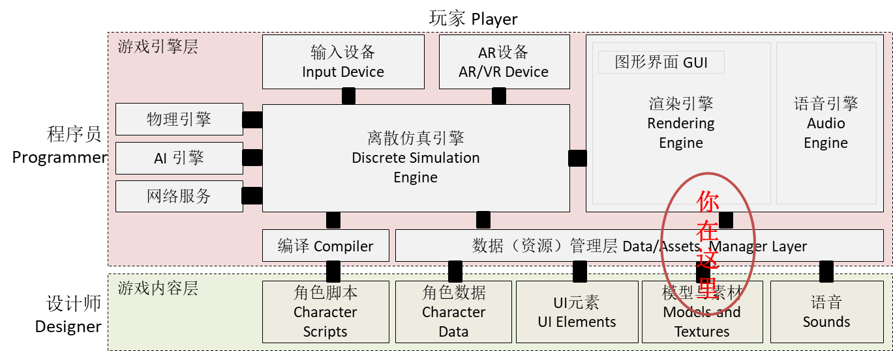
资源下载
- 资源商店，Fx Explosion , 9.8 MB
- 标准资源包 ParticleSystems
- 资源商店，Unity Particle Pack , 139 MB
1、粒子系统概述
1.1 粒子系统及其作用
粒子系统是模拟一些不确定、流动现象的技术。它采用许多形状简单且赋予生命的微小粒子作为基本元素来表示物体(一般由点或很小的多边形通过纹理贴图表示)，表达物体的总体形态和特征的动态变化。人们经常使用粒子系统模拟的现象有火、爆炸、烟、水流、火花、落叶、云、雾、雪、尘、流星尾迹或者象发光轨迹这样的抽象视觉效果等等。
1.2 粒子系统背后的知识
自然界有许多看似随机复杂的现象，它们却受一些 简单的规则 （主成分）支配，叠加随机噪声形成。发现这些规则，并利用计算机模拟、仿真这些现象推动了物理学、计算机科学等学科相互交叉。粒子系统是其中应用之一。
做好粒子系统仅学编程是远远不够的！XX电视剧说某计算机大神写了一个游戏成功创业引的无数女神尽折腰，只是文学作品的提炼。要想完成类似上图的效果，涉及哪些课程和技术呢？
首先，需要提到的人就是香农（Claude Shannon）。你可能以了解香农采样定理，香农最大的贡献就是熵（entropy）的概念，他证明熵与信息内容的不确定程度有等价关系，奠基了“信息论”。即不确定是可度量的。高中讲的水分子运动（布朗运动）就是最好的案例，墨水扩散的效果就是典型的粒子系统效果。
其次，人们发现整体与局部的相似性，如分形（fractal）图。例如，海岸线和山川形状，从远距离观察，其形状是极不规则的。从近距离观察，其局部形状又和整体形态相似。在计算机图形学中，利用这种自相似性，可以构造自然而复杂的物体。
最后，作为粒子系统，每个粒子运动一般具有简单的数学模型和它们之间具有自形似的运动过程。通过引入特定的随机分布作用于粒子，使得系统整体呈现复杂的现象，这是粒子系统的本质。
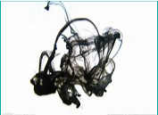
分形构造的树叶；墨水的扩散
因此，你构建游戏场景时种的草，栽的树的背后都会涉及粒子知识。粒子则涉及物理学、信息论、计算机图形学、系统控制与仿真、随机过程等课程的内容。
1.3 粒子系统主要的概念
使用粒子仿真物理现象，涉及多门课程。
为了让普通人也能使用粒子创作，人们设计了各种粒子系统工具。这些工具一般会涉及以下概念：
1、粒子（Particle）
粒子是粒子系统管理的基本单位。一般它是材料（Material）。材料包含两个内容，纹理（texture）、shader 分别负责形态、光照效果两个方面。通常，粒子系统包含基础材料库供用户选择。
2、生命周期
每个粒子都有自己的生命周期。包括初始化状态、运动变化状态、回收状态。根据归一化生命周期，控制粒子的运动与变化。
3、渲染（render）
渲染是定义粒子材料与摄像机之间的关系。主要包括材料面方位、显示顺序、光照等信息
如果是 3D 渲染，需要 uv 贴图网格
4、运动管理
粒子运动学或物理学管理。包括颜色、力场、速度、碰撞等属性
5、发射器管理
粒子工厂的管理。包括粒子初始化、喷射位置与形状等
1.4 Unity 粒子系统概述
Unity 粒子系统是复杂的组件。从 2019.4 版本开始，支持 Visual Effect Graph 。内置粒子系统 与 Visual Effect Graph 解决方案的不同，参见 选择粒子系统解决方案。
操作 08-01，粒子系统属性与主要子模块
- 使用 菜单 -> GameObject -> Effects -> Particle System 在游戏对象场景中添加一个 Particle System。
- 选择该 Particle System ，在 Scene 中见到仿真执行控制窗口

- 在 Inspector 中见到 Particle System 组件。（事实上，只要是有 Particle System 组件 的东西就会喷粒子！）

1、粒子与材料
默认粒子物体是面片（Quad），它是如何显示的？
Render 模块 的 Material 属性最重要。
在 标准资源库/ParticleSystem/Materials 有一些材质。请拖拉到 Material 属性
点 Play 按钮仿真执行，观察不同材料喷发出来的效果！
如果材料是 2D 动画，如 ParticleFlames 是 8 X 4 的动画
Texture Sheet Animation 模块 设置 Tiles 属性，就可以观察到动画被喷发出来的效果！
2、粒子生命周期与初始状态
粒子系统 (Particle System) 主模块 的参数可控制 粒子生命周期 等全局属性

主要属性包括：
- Duration 发射器喷粒子的时间长度
- Looping 如果启用此属性，系统将在其持续时间结束时再次启动并继续重复该循环
- Prewarm 如果启用此属性，系统将初始化，就像已经完成一个完整周期一样（仅当 Looping 也启用时才有效）
- Start Lifetime 粒子的初始生命周期
- Start Speed 每个粒子在 适当方向 的初始速度
- Start …
请修改这些参数，观察粒子的变化。例如：Start Lifetime = 2；Start Speed = 2
3、发射器设置
它由两个模块组成。
Emission 模块 , 此模块中的属性会影响粒子系统发射的速率和时间。其中有一个突发发射配置表
Shape 模块，此模块用于定义可发射粒子的体积或表面以及起始速度的方向。
例如，
- 选择 Shape 模块的 Shape = box; Scale x = 10, y = 10
- 选择 main 模块， start size = 0.2
- 选择 Transform 组件，使得粒子系统 position y = 10， rotate x = 90 （Z 轴向下）
这时就可以看到类似飘雪的效果！
4、运动和变化管理
… over Lifetime 或 … by Speed 模块都是控制变化的。例如，
- 勾中 Size over Lifetime 模块
- Inspector 下方有曲线编辑器，使得最大值为 0.5
- 选择 main 模块， start size = 0.5

飘雪到地面有了越来越大的效果！
- 为粒子设置 Gradient 颜色时，将显示渐变编辑器 (Gradient Editor)：

- Mode： 确定是否混合粒子颜色设置。
- Color： 显示渐变中当前所选关键点的颜色。使用此项可以编辑渐变中该位置的颜色。
- Location： 显示当前所选关键点在渐变上的距离。
- Presets： 保存渐变设置。单击 New 可将当前值集设置为渐变预设。
- 各种模块中的颜色属性按照每个通道相乘，从而计算出最终的粒子颜色结果。
5、其他
粒子效果制作是一个复杂的事情。包括噪音、碰撞等技巧。
例如：
用Unity来下一场雪吧——Particle System 下雪粒子特效
2、从零开始设置粒子系统
然而，粒子系统在游戏中也是复杂的。最佳方法就是模仿与实践！
本部分要求你从一个默认粒子系统，经过一系列设置步骤，产生指定效果的粒子系统。目的是帮助你理解上述基本概念，学习 Unity 相关组件的使用。
请创建一个新的空Unity项目，开启粒子系统之旅。
2.1 准备工作
操作 08-02，体验 Fx Explosion 粒子效果
- 导入资源 Fx Explosion
- Assets 中看见 Fx Explosion Pack
- 点 run 按钮， 系统报编译错误
- 按提示修改代码！
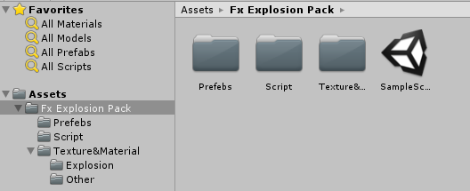
- 添加 plane 作为地面
- 从 Prefabs 中将 Exposon3 拖入 Scene 面板
- 展开 Exposon3 对象树，它由3个粒子系统和一个光源组成
- 选择 Exposion-[Explosion2] 物体
- 观察 Inspector 面板
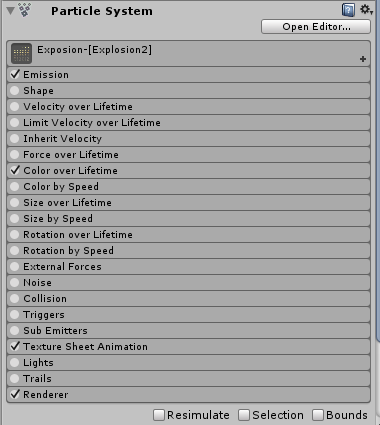
- 观察场景
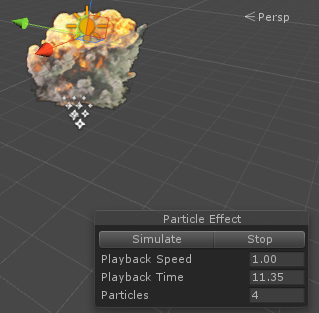
- 点击图中 Particle Effect 中 Simulate 按钮观察效果
- 菜单 GameObject -> Create Empty 命名为 MyEx
- 选择 MyEx 对象，上下文菜单 -> Particle System 并命名为 MyExposion
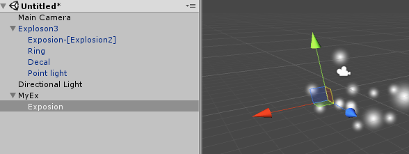
要点:粒子的组件
一个粒子系统由基本属性和许多子组件构成，这个例子仅包含四个需要设置（打勾）的子组件
一个粒子效果需要多个粒子系统配合
我们的目标是从原始的粒子系统设置成 Exposion-[Explosion2] 效果！
2.2 选择粒子材料并设置渲染
设置选择粒子材料与渲染，通常是第一步
操作 08-03，粒子材料与渲染
- 选择 MyEx 的 MyExposion 对象
- 选择 Inspection 面板
- 展开 Particle Syetem 的 Render 设置：
- Material 选择 Exposion2 材料，观察到 6*6 的面片飞出
- Render 模式选择 Vertical Biliboard
- Max Parricle Size 设置成 5
- 展开 Texture Sheet Animation, 选择动画设置
- Tiles 设置为 6*6
- 选择 Frame over Time， 在最下面有曲线编辑器，最终结果如图所示
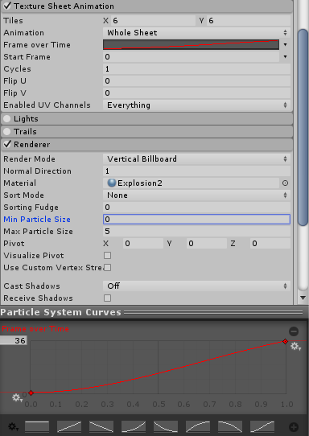
这时，粒子系统发射无数的爆破云动画
2.3 设置运动与发射器
操作 08-04，设置运动与发射器
- 选择 Color over Time
- 设置运动状态色彩变化，如图
你看到渐变编辑器：
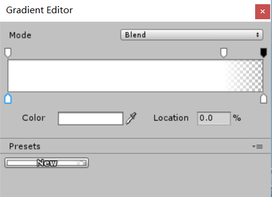
上面是 Alaph 通道（透明度），下面是色彩渐变
- 取消 Shape 则发射成直线
- 选择并展开 Emission
- 设置 Rate Over Time 为 1000
- 展开 particle 主控
- 设置 Duration 为 1
- 设置 Start Lifetime 为 1.5
- 设置 Start Speed 为 0
- 设置 Start Size 为 6
- 设置 Scaling Mode 为 Shape
- 设置 Max Particles 为 4
- 设置 Looping 为 false
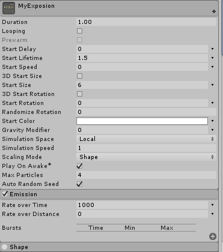
这时，你已看到了最后的效果。任务完成！
2.4 完成 Exploson3 仿制
参照 2.2 和 2.3 步骤设置 MyRing 和 MyDecal
操作 08-05，完成 Explosion 仿制
- 创建 MyRing 对象，并设置
- 创建 MyDecal 对象，并设置
- 保存为预制。
3、粒子系统的编程
粒子部件是一个非常复杂的对象，分为许多子部件，每个子部件也有许多属性，你很难精通这些部件，因此制作与控制粒子系统同样是复杂的问题。 本部分考虑我们获取一个粒子效果预知后，如何使用或控制。
3.1 直接实例化使用粒子系统
- 设置粒子系统 main 的属性
- Play On Awake 属性设置为 True
- 一般情况下， Lopping 属性设置为 False
在预制资源上，添加以下代码
|
|
在需要粒子效果时，直接使用 Instantiate(...) 该效果。
3.2 使用 ParticleSystem 组件简单控制
手册给了样例代码, 请看 ParticleSystem 的 API 查看如何 Play，Stop 等操作
3.3 模拟汽车尾气（拟物控制）
更高级的控制是用粒子系统模拟现实，我们需要通过编码，使游戏开发人员通过定制的可理解参数控制物理现象。官方在手册中给出汽车尾气模拟的案例。
阅读之前，先体验以下尾气模拟的效果：
操作 08-05，模拟汽车尾气效果
-
导入标准粒子资源
- 从菜单 Assets -> Import Package -> Particles 导入系统提供的粒子资源
- 将标准资源中 ParticleSystems/Prefabs 下 Smoke 拖入场景 （2018版是 Somke4）
- 选择粒子材料 ParticleSmokeBlack （2018版是 Somke4）
- 用鼠标拖动 Smoke 对象模拟汽车运动，类似汽车尾气现象将呈现
-
选择 ParticleSystem 的 Force over Lifetime
- 粒子推动力为 (-1，0，0)
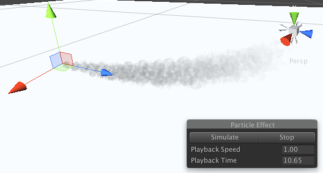
通过手册给出给的代码，你可以用更直观的参数使用粒子。
|
|
这段代码让用户更加容易的使用粒子系统产生不同引擎效果。它定义了引擎类型、引擎磨损程度与排烟效果之间的关系，这样用户通过调整这些易于理解的参数就可以控制效果。
要点:拟物化
是本课程的基本要求！
3.4 粒子级别控制
请参考脚本手册 TriggerModule
中文参考 案例
3.5 小结
要点
- 适当找一些资源，通过粒子组合可满足很多游戏场景需要
- 用一些简单程序控制粒子，可满足绝大多数应用需要
4、粒子流编程
5、面向对象的编程 - Put All togather！
5.1 对比两个同学的游戏设计
A 同学的 UML 设计：
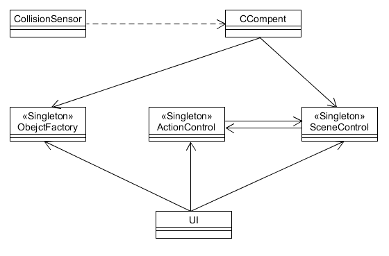
B 同学的 UML 设计：

详细见：https://blog.csdn.net/x2_yt/article/details/69055355
如果你沿着本课程作业，你会发现 B 同学的所有类的代码都似曾相识。
复用，Ctrl+C+V 的编程竟然在无意中实现了！尽管 B 同学代码远远多于 A 同学，事实上 A 同学需要付出更多的时间完成程序，因为设计、调试花费了大量时间。
5.2 设计模式与游戏设计
我们将 B 同学 UML 设计整理，就得到本课程推荐的游戏设计框架：
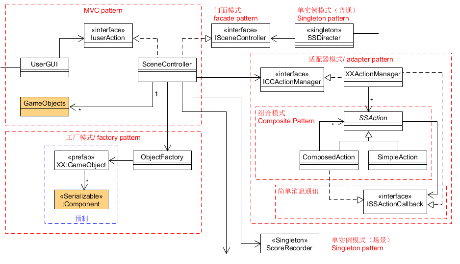
- 这个设计给人第一感觉是各种设计模式的综合运用
- 仔细观察结构，它的每个部分之间依赖关系都是单向的、无环的
通过游戏开发实践，这样的程序易于修改、扩展和调试。
如何才能设计出这样的程序？
5.3 面向对象程序设计准则
除了较好理解和掌握 23 种设计模式外，特别需要理解以下 7 条基本设计准则：
- 单一职责原则（Single Responsibility Principle，SRP） 又称单一功能原则，由罗伯特·C.马丁（Robert C. Martin）于《敏捷软件开发：原则、模式和实践》一书中提出的。职责是指类变化的原因，单一职责原则规定一个类应该有且仅有一个引起它变化的原因，否则类应该被拆分（There should never be more than one reason for a class to change）。
- 单一职责原则的核心就是控制类的粒度大小、将对象解耦、提高其内聚性。
- 单一职责原则是最简单但又最难运用的原则。
- 与应用的规模和复杂度有关。上述游戏设计也不是一步发展到有这么多类的，而是一个逐步细化的过程
- 简单的应用，用复杂的设计则会导致额外的结构复杂性，即过度设计
- 复杂的应用，用直观简单的设计则导致难以扩展、维护，即紧耦合
- 与应用的规模和复杂度有关。上述游戏设计也不是一步发展到有这么多类的，而是一个逐步细化的过程
- 如何判定单一职责原则？
- 符合人类解决类似问题的自然而精巧设计，如 23 种设计模式
- 识别应用中易变需求。假设常见变化发生，其相关需要修改的代码应控制在局部范围。在游戏中常见的变化：
- 规则不确定：包括计分规则，难度控制规则等的变化
- 资源不确定：包括动画剪辑、人物造型、地图地形、界面不美观等的变化
- 请列举一些案例，说明应对这些变化的方法和技巧。例如：
- 使用发布订阅模式解决 …
- Unity 动画状态机的动画覆盖控制器解决 …
- 开闭原则（Open Closed Principle，OCP） 由勃兰特·梅耶（Bertrand Meyer）提出，他在 1988 年的著作《面向对象软件构造》（Object Oriented Software Construction）中提出：软件实体应当对扩展开放，对修改关闭（Software entities should be open for extension，but closed for modification），这就是开闭原则的经典定义。
- OCP 是 SRP 实现的关键技术
- 满足开闭原则的作用
- 提高代码的可复用性
- 提高软件的可维护性
- 提高测试的效率
- 实现 OCP 的基本方法 “抽象约束、封装变化”。似乎很容易，通常设计多个设计模式的组合，因为抽象是“双刃剑”
- 抽象合理，会使得程序灵活性好，适应性广。软件中易变的细节可以从抽象派生来的实现类来进行扩展，当软件需要发生变化时，只需要根据需求重新派生一个实现类来扩展就可以了。
- 过度抽象，会导致程序难以理解，开发效率大幅降低。因此，应用开发者一般不喜欢深层次的抽象，即如果硬编码能解决的问题，一般不通用化。（抽象会导致 5-10 倍的开发成本和高层次的设计师，如果没有足够价值的应用场景和合适的人才，建议更敏捷一些，而不是加强设计能力，等业务做大了有重构和改进的机会！）
- 缺乏抽象，会导致代码凌乱，难以扩展。因此，架构设计、底层模块设计、通用模块设计、中台设计的工作者因为面临应用细节不清、模块或组件使用者需求未知，所以他们特别需要抽象能力。其中，设计模式就是最重要的设计方法之一。
- OCP 通常把问题分为两个部分，一部分期望是封闭的，如模块、组件或包；另一部分开放的，如模块等的使用者，具有较大的不确定性。这样设计转化三个设计问题：
- 契约设计：契约开放部分如何使用封闭部分。这个契约通常用接口、抽象类、或管理类表达
- 模块内部设计：模块应建立在契约基础上，如果模块内部事件、方法需要外部提供逻辑，应提供注入逻辑，采用订阅发布模式实现
- 模块应用案例设计：通过契约使用模块的代码或工具包
- 这样
- 从开发角度，两个部分基于契约相互独立开发（API-First Development）
- 从维护角度，封闭部分的修改不影响开放部分（closed for modification）
- 从使用角度，模块可用于满足契约约束的各种场景（open for extension）
- 案例 1：分离游戏用户动作与游戏逻辑
- 游戏外部实体动作是有限而且比较稳定，在游戏设计中由游戏基本规则决定。facade 模式就自然出现了，如上图 IUserAction
- 为了当捕获用户动作的类知道哪个对象实现 IUserAction，单实例模式是必不可少。通常应用的控制者、应用配置管理者、工厂类都是单实例模式。
- 这样我们会把使用 IUserAction 的脚本放在一起，它们通常是键盘鼠标事件处理、UI菜单、游戏对象中用户事件捕获类。这些类并不关注逻辑的具体实现
- 案例 2：假设游戏需要一个内部支付模块，支持多个支付渠道
- 设计支付模块契约 …
- 设计支付模块 … 大概会涉及 单实例、工厂、适配器、责任链 等模式
- 设计支付常见场景的案例代码（必须包含错误处理） …
- 依赖倒置原则（Dependence Inversion Principle，DIP） 是 Object Mentor 公司总裁罗伯特·马丁（Robert C.Martin）于 1996 年在 C++ Report 上发表的文章。依赖倒置原则的原始定义为：高层模块不应该依赖低层模块，两者都应该依赖其抽象；抽象不应该依赖细节，细节应该依赖抽象（High level modules shouldnot depend upon low level modules.Both should depend upon abstractions.Abstractions should not depend upon details. Details should depend upon abstractions）。
- 其核心思想是：要面向接口编程，不要面向实现编程。
- DIP 是实现 OCP 的重要手段
- 依赖契约
- 否则不可能实现客户端与模块的交互独立
- 绝大多数设计模式都是 DIP 的最佳实践
- 订阅发布模型 …
- 抽象工厂 … 如：JDBC 包
- 门面模式 …
- 代理模式 …
- 命令模式 …
- …
- 接口隔离原则（Interface Segregation Principle，ISP） 2002 年罗伯特·C.马丁给“接口隔离原则”的定义是：客户端不应该被迫依赖于它不使用的方法（Clients should not be forced to depend on methods they do not use）。要求程序员尽量将臃肿庞大的接口拆分成更小的和更具体的接口，让接口中只包含客户感兴趣的方法，通过接口组合支持复杂的接口。
- DIP 实现中接口设计原则
- Go 语言接口设计就是 ISP 最佳实践
- 例如 go语言 io 库
- C# 支持多接口实现
- 迪米特法则（Law of Demeter，LoD） 又叫作最少知识原则（Least Knowledge Principle，LKP)，产生于 1987 年美国东北大学（Northeastern University）的一个名为迪米特（Demeter）的研究项目，由伊恩·荷兰（Ian Holland）提出，被 UML 创始者之一的布奇（Booch）普及，后来又因为在经典著作《程序员修炼之道》（The Pragmatic Programmer）提及而广为人知。
- 迪米特法则的定义是：只与你的直接朋友交谈，不跟“陌生人”说话（Talk only to your immediate friends and not to strangers）。
- 其含义是：如果两个软件实体无须直接通信，那么就不应当发生直接的相互调用，可以通过第三方转发该调用。其目的是降低类之间的耦合度，提高模块的相对独立性。
- LKP 是对 SRP 的有效补充
- 设计管理者、协调者的类，协调单一职责协同工作
- 里氏替换原则（Liskov Substitution Principle，LSP） 由麻省理工学院计算机科学实验室的里斯科夫（Liskov）女士在 1987 年的“面向对象技术的高峰会议”（OOPSLA）上发表的一篇文章《数据抽象和层次》（Data Abstraction and Hierarchy）里提出来的，她提出：继承必须确保超类所拥有的性质在子类中仍然成立（Inheritance should ensure that any property proved about supertype objects also holds for subtype objects）。
- 通过经典 “方形不是矩形” 悖论，说明继承在特定情况下的危害
- 合成复用原则（Composite Reuse Principle，CRP） 又叫组合/聚合复用原则（Composition/Aggregate Reuse Principle，CARP）。它要求在软件复用时，要尽量先使用组合或者聚合等关联关系来实现，其次才考虑使用继承关系来实现。
- 组合胜于继承
6、作业与练习
本次作业基本要求是三选一
1、简单粒子制作
- 按参考资源要求，制作一个粒子系统，参考资源
- 使用 3.3 节介绍，用代码控制使之在不同场景下效果不一样
2、完善官方的“汽车尾气”模拟
- 使用官方资源资源 Vehicle 的 car， 使用 Smoke 粒子系统模拟启动发动、运行、故障等场景效果
3、参考 http://i-remember.fr/en 这类网站，使用粒子流编程控制制作一些效果， 如“粒子光环”
- 可参考以前作业
Author 潘茂林
LastMod 2020-11-03